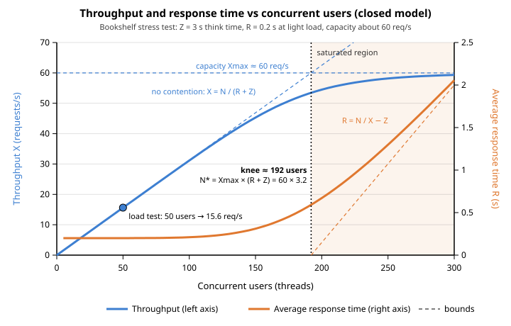

Analyzing Results & Finding Bottlenecks
|
This content was generated with the assistance of AI and should be verified against the official documentation before being relied on in production. |
This page was written against Apache JMeter 5.6.3, the latest release on 2026-10-14. It runs on Java 8 or later, and
Java 17 or later (21 recommended) is assumed by the examples. JMeter 6.0 is not released: the changes planned for it on
the apache/jmeter master branch (Java 17 or later, Open Model Thread Group delays measured from the Thread Group start,
among others) are mentioned only where they affect how results compare, and are described as planned, not as shipped
behaviour. Plugin-based elements come from the JMeter Plugins Manager 2.0 catalogue at jmeter-plugins.org. Server-side
examples assume the Bookshelf API is a Spring Boot service that exposes Micrometer metrics to Prometheus, and that its
database is PostgreSQL.
A load test produces numbers; analysis turns them into a verdict and a next step. The JMeter manual describes how results are recorded and summarised (listeners, the CSV format, the HTML dashboard), but not how to reason about them. The methodology on this page therefore comes from the books, cited by chapter: Bayo Erinle, Performance Testing with JMeter, 2nd edition (PTwJ, JMeter 2.12), chapter 1 for the analyse, change one thing and retest loop and its system, database and application bottleneck categories, and chapter 5 for what server monitoring should reveal; Sai Matam and Jagdeep Jain, Pro Apache JMeter (Pro, JMeter 3.0), chapter 2 for reporting against a baseline and the 80 percent utilisation rule; and Bayo Erinle, JMeter Cookbook (JMeter 2.11), chapter 4 for database bottlenecks, chapter 7 for result analysis with graphs and chapter 8 for monitoring the server while the test runs. The queueing formulas (Little’s Law, the utilisation law and the saturation knee) are standard operational analysis, explained here rather than quoted, because the official documentation does not state them.
This page builds on Performance Testing Fundamentals, which defines the test types, the performance criteria, closed and open workload models, Little’s Law with the Bookshelf numbers, percentiles versus averages, APDEX and coordinated omission. Those explanations are not repeated; this page applies them to real result files. Producing the files is covered by Running Tests in CLI Mode and Listeners & Results Files, the report by HTML Dashboard Report, and live graphs during the run by Real-time Monitoring with Backend Listener.
The running example is the Bookshelf plan bookshelf-load.jmx (log in, search, view a book, create a loan, view the
loan) with the profiles used across this section: the load test at 50 threads, a 60 s ramp-up and a 660 s duration
(10 minutes at full load), think time Z = 3 s and a light-load response time R = 0.2 s, which gives about 15.6 requests
per second; and a stress test that adds 25 users per step until the system saturates.
Where analysis sits
Analysis is the step between a run and the next change. PTwJ chapter 1 describes it as examining the results of each run, identifying the bottleneck, applying a change, preferably one at a time, and rerunning the same test to compare. Pro chapter 2 adds that results are compared with the requirements (a missed requirement is a defect) and with the baseline (any deviation is a trend to investigate).
The order matters. Response times of a run with many errors, or of a run whose load generator was overloaded, describe the failure or the generator, not the system. Validity comes first, then errors, then throughput, and only then latency.
The raw material: the results file
Every analysis starts from the per-sample results file written with -l in CLI mode. The manual recommends the CSV
format for it and lists the columns, in a fixed order, that appear when the corresponding save settings are enabled. The
columns that matter for analysis are:
| Column | Meaning (from the manual) | Use in analysis |
|---|---|---|
|
Sample start time in milliseconds since 1970 (the default timestamp format) |
Aligning with server metrics; cutting warm-up and ramp-down out of the window |
|
Elapsed time in milliseconds: from just before sending the request to just after the last response byte |
The response time that percentiles and averages are computed from |
|
Sampler label |
Grouping per transaction; identical labels are aggregated together |
|
For example |
Classifying errors |
|
|
Error rate; assertion failures versus transport failures |
|
Bytes received and sent |
Bandwidth; spotting truncated or error pages (unusually small bodies) |
|
Active threads in this Thread Group and in all groups |
The concurrency each sample was taken at; grouping a stepped run into steps |
|
Time to the first response byte |
Server think time versus transfer time |
|
Time to establish the connection, TLS handshake included |
Connection reuse problems, port exhaustion, slow TLS |
|
Idle time in milliseconds, normally 0 |
Time excluded from transactions (timers, when transactions exclude them) |
|
The machine that generated the sample (off by default) |
Telling generators apart in distributed runs |
The glossary adds two definitions that shape every interpretation: elapsed time does not include rendering or client JavaScript (JMeter is not a browser), and connect time is not subtracted from latency. Connect time is computed only for the HTTP Request, TCP and JDBC samplers.
The dashboard needs a minimum set of save settings, which are the defaults in 5.6.3. If a team has customised
jmeter.save.saveservice.*, check them against the list in the dashboard chapter. A setting that is useful for
analysis and off by default is the generator’s host name:
# user.properties on every load generator
jmeter.save.saveservice.output_format=csv
jmeter.save.saveservice.timestamp_format=ms
jmeter.save.saveservice.thread_counts=true
jmeter.save.saveservice.connect_time=true
jmeter.save.saveservice.latency=true
jmeter.save.saveservice.assertion_results_failure_message=true
# record which generator produced each sample (off by default)
jmeter.save.saveservice.hostname=trueSource: Glossary (User Manual)
Three derived artefacts are read alongside the raw file:
-
the summariser lines printed every 30 seconds in CLI mode (the
summary +line is the last interval, thesummary =line the running total), which show throughput and errors while the test is running; -
the HTML dashboard (
-e -oat the end of the run, or-gon an existing file), with its statistics, errors and APDEX tables and its over-time graphs; -
the dashboard’s
statistics.json, written next toindex.htmlby the JSON exporter configured inreportgenerator.properties. It holds one object per label plusTotal, with the fieldssampleCount,errorCount,errorPct,meanResTime,medianResTime,minResTime,maxResTime,pct1ResTime,pct2ResTime,pct3ResTime(the three configurable percentiles, 90, 95 and 99 by default),throughput,receivedKBytesPerSecandsentKBytesPerSec. The field list was read from a report generated by JMeter 5.6.3, since the manual does not document the file; it is the easiest input for scripts and CI gates.
A typical end of a 50-thread Bookshelf load run in CLI mode:
jmeter -n -t bookshelf-load.jmx -l results/load.jtl -e -o results/load-report \
-Jthreads=50 -Jrampup=60 -Jduration=660summary + 462 in 00:00:30 = 15.4/s Avg: 212 Min: 41 Max: 1180 Err: 1 (0.22%) Active: 50 Started: 50 Finished: 0
summary = 9284 in 00:10:59 = 14.1/s Avg: 209 Min: 38 Max: 1874 Err: 19 (0.20%)
Tidying up ... @ 2026 Oct 14 09:11:02 CEST (1791961862315)
... end of runThe overall rate (14.1/s) is lower than the steady-state rate (15.4/s) because the total includes the 60 s ramp-up;
judge steady state from the summary + lines of the hold phase or from a dashboard filtered to that window (see
Excluding warm-up and ramp-down). The output above is illustrative; the format is the one documented for Generate Summary Results.
Averages, percentiles and standard deviation
Performance Testing Fundamentals shows with a 100-sample example why the mean hides the tail and why requirements should be stated as percentiles. This section covers how JMeter reports each statistic and how to read them together.
What each JMeter report gives you
| Statistic | Summary Report | Aggregate Report | Dashboard Statistics table | statistics.json |
|---|---|---|---|---|
Samples, average, min, max, error % |
Yes |
Yes |
Yes |
Yes |
Median |
No |
Yes |
Yes |
|
Three percentiles (90/95/99 by default) |
No |
Yes ( |
Yes ( |
|
Standard deviation |
Yes ( |
No |
No |
No |
Throughput |
Yes |
Yes |
Yes |
|
KB/s received and sent |
Yes |
Yes |
Yes |
Yes |
Memory needed |
Constant |
Grows with distinct elapsed values |
Sliding window of |
Same as the dashboard |
The manual describes the Summary Report as the low-memory variant of the Aggregate Report, and recommends loading a
results file into either listener after the run rather than attaching them during a load test. The dashboard and the
Aggregate Report estimate percentiles with different formulas, so their values can differ, most visibly when there are
few samples or a wide spread; setting backend_metrics_percentile_estimator=R_3 (no prefix) brings the dashboard close
to the Aggregate Report.
Reading the distribution
Read the statistics of one transaction as a shape:
-
Median versus mean. In a symmetric distribution they are close. A mean well above the median means a long slow tail; a mean below the median is unusual and often means many very fast samples, such as fast errors.
-
The step from p90 to p99. A p99 two or three times the p90 is a normal tail for a web service. A p99 ten times the p90 means a separate population of slow requests: a lock wait, a cache miss path, a garbage collection pause, a retry after a timeout. Find out which requests they are (by label, by time, by thread) before tuning anything.
-
Max. One sample; useful only to spot timeouts (a max equal to the client or server timeout) and outliers. Never a requirement on its own.
-
Per transaction, not
Total. TheTotalrow mixes a 40 ms book view with a 600 ms loan creation. Its percentiles describe no real user action; criteria belong on each transaction.
Standard deviation
The Summary Report’s Std. Dev. is the population standard deviation of the elapsed times (the glossary specifies
population, not sample, standard deviation). It measures spread around the mean, which is useful for one thing:
spotting instability between runs or between transactions. It is not a substitute for percentiles, because response
times are skewed and the familiar "mean plus or minus two standard deviations covers 95 percent" rule only holds for a
normal distribution.
Applied to the fundamentals page’s example (95 samples at 100 ms, 5 at 3000 ms, mean 245 ms):
The mean minus two standard deviations is negative, which is impossible for a response time, and the mean plus two standard deviations (about 1509 ms) is neither the p95 (100 ms) nor the p99 (3000 ms). A standard deviation larger than the mean (a coefficient of variation of 632 / 245 = 2.6 here) is itself the signal: the distribution has a heavy tail or two populations. Look at the percentiles and the Response Time Distribution graph to see which.
Throughput as JMeter computes it
The glossary defines throughput as the number of requests divided by the time from the start of the first sample to the end of the last sample, intervals included. Two consequences from the Aggregate Report documentation:
-
Timers and other samplers in the same thread lengthen the total time and therefore lower the throughput of each label; that is expected in a plan with think time.
-
Two identical samplers with different labels each show half the throughput of a single label. Name samplers deliberately: one label per business operation.
The overall throughput of a run includes ramp-up and ramp-down, so it is lower than the steady-state rate. For the Bookshelf load test, the 15.6 requests per second predicted by Little’s Law applies to the 10-minute hold, not to the whole 11-minute run.
Error rate and error types
Errors come first because they invalidate everything else. A failed request is often fast (a connection refused takes milliseconds), so a run with errors can show better response times than a clean one. A rule that keeps analysis honest: if the error rate of a transaction is above its acceptance threshold, report the failure and do not draw conclusions from that transaction’s response times.
Where errors appear
-
The summariser’s
Err:column, during the run. -
The dashboard’s Errors table (each error type with its share of errors and of all samples) and Top 5 Errors by Sampler table, after the run. Its Response codes per second graph shows when each code appeared.
-
The raw
responseCode,responseMessage,successandfailureMessagecolumns.
Classifying them
| Error type | Typical cause | Where to look |
|---|---|---|
|
Expired or missing token: the correlation failed, or the token lifetime is shorter than the test |
The login sampler and its extractor (default value |
|
Test data: a book that does not exist, a loan already returned, data consumed by a previous run |
The CSV files and data reset between runs; see Parameterization & Test Data |
|
A rate limiter in front of the service |
Gateway configuration; whether the limit is part of what is being tested |
|
Application exception |
Application logs for the same timestamps |
|
A proxy or load balancer timed out or found no healthy instance; often the first sign of saturation |
Proxy logs, instance health, server thread and connection pools |
|
The response did not arrive within the sampler’s response timeout |
Server saturation, or a timeout set too low in the plan |
|
Connection refused or not accepted: the server is down, its accept queue is full, or the port is wrong |
Server availability and listen backlog |
|
Generator out of ephemeral ports, or a keep-alive connection closed by the server |
The load generator and connection reuse (see Is the load generator the bottleneck?) |
Assertion failure ( |
The response arrived but was wrong: an error page with status 200, an empty search, a timeout of a Duration Assertion |
|
A shape to watch for: errors that start at a particular step of a stress test and grow with every further step are a capacity signal. Errors that occur at a constant low rate from the first minute are usually a script or data problem.
Counting errors from the results file
The dashboard gives the same breakdown, but a small script is handy in CI logs and for files too big to open. This one uses only the Python standard library and the CSV header written by JMeter:
#!/usr/bin/env python3
"""Count failed samples by label, response code and failure message. Usage: python3 errors.py results.jtl"""
import csv
import sys
from collections import Counter
total = 0
failures = Counter()
with open(sys.argv[1], newline="", encoding="utf-8") as f:
for row in csv.DictReader(f):
total += 1
if row["success"] != "true":
reason = row["failureMessage"] or row["responseMessage"]
failures[(row["label"], row["responseCode"], reason)] += 1
errors = sum(failures.values())
print(f"{errors} errors in {total} samples ({100 * errors / total:.2f} %)")
for (label, code, reason), count in failures.most_common(10):
print(f"{count:>6} {100 * count / errors:5.1f} % {label:<12} {code:<60.60} {reason}")Output for an illustrative stress run:
457 errors in 60033 samples (0.76 %)
122 26.7 % Search Non HTTP response code: java.net.SocketTimeoutException Non HTTP response message: Read timed out
121 26.5 % Search 503 Service Unavailable
59 12.9 % Create loan 503 Service Unavailable
59 12.9 % View book 503 Service Unavailable
48 10.5 % View book Non HTTP response code: java.net.SocketTimeoutException Non HTTP response message: Read timed out
48 10.5 % Create loan Non HTTP response code: java.net.SocketTimeoutException Non HTTP response message: Read timed outTimeouts and 503 responses spread across every transaction point at a shared resource, not at one endpoint.
Throughput versus users: finding the saturation point
The most useful single picture of a system’s capacity is throughput and response time plotted against the number of concurrent users. It comes from a stress test that raises the load in steps and holds each step long enough to reach a steady state: for Bookshelf, steps of 25 users held for two minutes each, built with the Concurrency Thread Group described in Custom Thread Groups & Load Shaping.

The curve has three regions:
-
Linear region. Throughput grows in proportion to users, as Little’s Law predicts for a closed model with constant response time: \(X = N / (R + Z)\). Response time stays flat at its light-load value. The 50-user load test sits here at 15.6 requests per second.
-
Knee. One resource (the bottleneck) approaches full use. Throughput bends towards its maximum and response time starts to rise because requests queue for that resource.
-
Saturated region. Throughput is flat at the capacity \(X_{\max}\); every additional user only adds queueing. In a closed model the response time then grows linearly with the users: \(R = N / X_{\max} - Z\). Some systems go further and show retrograde throughput, where throughput falls as load rises because of thrashing (lock contention, GC overhead, retries, connection churn). A falling throughput curve is an urgent finding.
The saturation point is the knee. Where the two asymptotes of the figure cross, the light-load line \(N / (R_0 + Z)\) meets the capacity line \(X_{\max}\):
With the Bookshelf values (\(X_{\max} \approx 60\) requests per second, \(R_0 = 0.2\) s, \(Z = 3\) s) the knee is at 60 x 3.2 = 192 users. Real curves bend before the knee, as the figure shows; the formula gives the order of magnitude and a sanity check for the measurements.
Where the capacity comes from: the utilisation law
The utilisation law of operational analysis states that the utilisation of a resource equals the throughput times the service demand per request at that resource: \(U = X \times D\). A resource saturates at \(U = 1\) (or, for a pool of \(c\) identical servers, \(U = c\)), so
Suppose each Bookshelf request holds a database connection from a HikariCP pool of 10 connections for 0.16 s on average. The pool can then serve at most 10 / 0.16 = 62.5 requests per second, which matches the observed plateau of about 60: the pool, not the CPU, is the bottleneck. If the server CPU were the limit instead, with 4 cores and 0.05 s of CPU per request, the ceiling would be 4 / 0.05 = 80 requests per second. The lowest ceiling wins, and that resource is the bottleneck. The service demand of each resource can be measured at light load from server metrics (connection hold time, CPU seconds per request), which makes it possible to predict the knee before running the stress test.
Pro chapter 2 recommends not operating above 80 percent utilisation, because requests do not arrive evenly and the system must absorb spikes. For Bookshelf that puts the sustainable operating point at 0.8 x 60 = 48 requests per second, or 48 x 3.2 = about 154 users with the same think time. That figure, not the knee, is the capacity to report.
Getting per-step numbers
The dashboard has the graphs needed to see the curve: Active Threads Over Time next to Transactions per second and Response Times Over Time shows each step; Times vs Threads plots response time against active threads directly (in distributed mode it shows the threads of one server on its horizontal axis, a documented limitation); and Response Time vs Request per second shows how latency grows with the rate.
For a table of the steps, group the samples by the allThreads column, which records the number of active threads when
the sample was taken:
#!/usr/bin/env python3
"""Per-step throughput, percentiles and error rate from a JMeter CSV results file.
Usage: python3 steps.py stress.jtl
Groups samples by the allThreads column (active threads when the sample ended).
"""
import csv
import sys
from collections import defaultdict
def percentile(sorted_values, pct):
# nearest-rank percentile on a sorted list
if not sorted_values:
return 0
rank = max(1, round(pct / 100 * len(sorted_values)))
return sorted_values[rank - 1]
steps = defaultdict(list)
with open(sys.argv[1], newline="", encoding="utf-8") as f:
for row in csv.DictReader(f):
steps[int(row["allThreads"])].append(row)
print(f"{'threads':>7} {'samples':>8} {'req/s':>7} {'avg ms':>7} {'p95 ms':>7} {'p99 ms':>7} {'err %':>6}")
for threads in sorted(steps):
rows = steps[threads]
start = min(int(r["timeStamp"]) for r in rows)
end = max(int(r["timeStamp"]) + int(r["elapsed"]) for r in rows)
elapsed = sorted(int(r["elapsed"]) for r in rows)
errors = sum(1 for r in rows if r["success"] != "true")
rate = len(rows) / ((end - start) / 1000)
print(f"{threads:>7} {len(rows):>8} {rate:>7.1f} {sum(elapsed) / len(elapsed):>7.0f} "
f"{percentile(elapsed, 95):>7} {percentile(elapsed, 99):>7} {100 * errors / len(rows):>6.2f}")Output for an illustrative Bookshelf stress run (two minutes per step):
threads samples req/s avg ms p95 ms p99 ms err %
25 937 7.8 199 456 623 0.11
50 1874 15.6 196 434 632 0.00
75 2810 23.4 199 444 701 0.00
100 3737 31.1 210 475 744 0.08
125 4630 38.5 236 530 786 0.09
150 5436 45.1 311 699 1053 0.09
175 6085 50.5 450 993 1413 0.02
200 6538 53.8 670 1512 2310 0.60
225 6818 54.0 951 2104 3060 0.84
250 6979 56.4 1306 2952 4387 1.19
275 7069 55.7 1654 3738 5460 1.63
300 7120 56.3 2087 4732 7127 2.09Reading it: throughput doubles from 25 to 50 users and keeps rising in proportion up to 125; from 175 users it gains little while the average and p95 climb steeply; from 200 users the error rate rises with every step. If the acceptance criterion is a p95 of 800 ms, the last compliant step is 150 users, close to the 154 users of the 80 percent rule. Samples taken while threads are starting or stopping are grouped with whichever thread count was active; for clean steps, hold each step for several times the cycle time (here 3.2 s) and ignore the first seconds of each step.
Little’s Law sanity checks
Little’s Law, \(N = X \times (R + Z)\) for a closed model, is derived and worked through on Performance Testing Fundamentals. In analysis it is a cross-check: three measured quantities must agree with the number of threads that were running. A mismatch means the test did not do what it was designed to do.
Check 1: do the measured numbers explain the thread count?
For the steady state of the load test, take the measured throughput and average response time, add the designed think time and compare the implied users with the active threads.
| Run | Calculation | Verdict |
|---|---|---|
Expected |
X = 15.4 req/s, R = 0.21 s, Z = 3 s: N = 15.4 x 3.21 = 49.4 |
Matches 50 threads |
Suspicious |
X = 11.2 req/s, R = 0.21 s, Z = 3 s: N = 11.2 x 3.21 = 36 |
14 of 50 threads unaccounted for |
In the second run the real cycle time is 50 / 11.2 = 4.46 s, so each request is followed by 4.25 s of something other than the measured sample instead of 3 s. Typical causes:
-
Think time is not what was intended. A Uniform Random Timer adds a random delay between 0 and its Random Delay Maximum to its Constant Delay Offset, so its mean is the offset plus half the maximum. An offset of 3000 ms with a maximum of 2500 ms averages 4.25 s, exactly the gap above. Several timers in scope also add up. See Timers & Think Time.
-
Unmeasured work in the loop. Pre- and post-processors, JSR223 scripts, a slow CSV read or a sampler excluded from the results.
-
The load generator is saturated and threads wait for CPU before they can send (see Is the load generator the bottleneck?).
-
Transaction Controller parents are counted as samples, which inflates X; filter them out or count only samplers.
Check 2: what concurrency did the server see?
Little’s Law applied to the server alone, with no think time, gives the average number of requests in progress inside
it: \(L = X \times R\). For the 50-user load test that is 15.6 x 0.2 = 3.1 requests in flight, a small fraction of a
Tomcat pool of 200 threads and of a database pool of 10 connections. At the plateau of the stress test it is
60 x 0.16 = 9.6 connections busy on average out of 10: the pool is full, confirming the utilisation-law reading above.
The same law applied to Micrometer’s request timer gives the server’s own measurement of in-flight requests: the rate of
the timer’s _sum series (seconds of request time per second) is the average concurrency, shown in the PromQL examples
below.
Check 3: for open models, were there enough threads?
An Open Model Thread Group or Arrivals Thread Group needs enough threads to absorb the arrival rate at the worst response time. If the pool runs out, arrivals are delayed and the open model degrades into a closed one. Compare the achieved arrival rate with the schedule: a shortfall during slow periods means the thread pool was too small. The sizing formula is on Open Model & Throughput Control.
Coordinated omission in closed-model results
Performance Testing Fundamentals explains the mechanism and quotes the manual’s single warning about it. In analysis, the question is how to recognise it in a results file and how much it distorts the numbers.
A worked case: during the Bookshelf load test the server stalls for 10 s (a full garbage collection, a database failover). With the closed 50-thread plan, every thread that sends a request during the stall waits for it, and within one cycle time (3.2 s) all 50 are stuck. The results file records about 50 slow samples, one per thread, and almost no samples at all for the rest of the stall. Real users arriving at 15.6 requests per second would have issued about 156 requests during those 10 s, each delayed by between 0 and 10 s. The closed run therefore under-represents the stall roughly threefold in its sample count, and its percentiles are better than what an open stream of users would have experienced.
How to recognise it:
-
Throughput dips exactly when response time spikes. On the dashboard, Transactions per second falls while Response Times Over Time rises, with no change in active threads. In a correctly sized open-model run, throughput would hold and the backlog would show as rising response time and errors.
-
Achieved load below planned load in the slow periods. Compute the expected rate from Little’s Law and compare it with the summariser lines minute by minute.
-
Gaps in
timeStampfor a thread: a thread whose consecutive samples are much further apart than R + Z was stuck.
What to do with it: report the percentiles of a closed run as the experience of the modelled user population, not of all arriving traffic; rerun the scenario with an open model when the real traffic is open; and treat every throughput dip as a finding to explain, never as noise.
Source: Best Practices (User Manual)
Comparing runs
A single run says little; the comparison with a baseline says whether a change helped. Pro chapter 2 describes comparing every report with the baseline to note trends, and PTwJ chapter 1 insists on changing one thing at a time so that each improvement can be attributed.
Keep the conditions identical
Before comparing two runs, check that they differ only in the change under study:
-
the same plan (commit of the
.jmx), the same properties (threads,rampup,duration, SLA properties), the same data files; -
the same JMeter and Java versions on the generators, and the same number and size of generators;
-
the same environment: instance types and counts, configuration, database size and indexes, cache state;
-
the same analysis window (warm-up excluded the same way) and the same percentile estimator.
Re-take the baseline after upgrading JMeter. In particular the planned 6.0 change to measure Open Model Thread Group and Precise Throughput Timer delays from the Thread Group start can shift arrival timing compared with 5.6.3, so open-model runs from the two versions should not be compared directly.
Excluding warm-up and ramp-down
The first minutes of a run include JIT compilation, empty caches and connection pool growth; the last seconds include
threads finishing. Generate the comparison report from the steady-state window only, using the dashboard’s
start_date and end_date properties, whose format is set by date_format (default yyyyMMddHHmmss). If the results
file was written in another time zone, the manual advises including the zone (zzz) in the date format.
# Load test started 09:00:00; ramp-up ends 09:01:00; analyse 09:02:00 to 09:10:30
jmeter -g results/load.jtl -o results/load-steady \
-Jjmeter.reportgenerator.start_date=20261014090200 \
-Jjmeter.reportgenerator.end_date=20261014091030The output folder must be empty or absent. The same window should be used for every run that is compared.
Run-to-run variance
Two runs of the same test on the same system never give identical numbers: garbage collection timing, cache state, other tenants and the network move them. Before declaring a regression, measure the noise. A practical method:
-
Run the baseline at least three times and record the metric of interest per transaction (for example the p95 of
Search). -
The spread between the runs is the noise band.
-
Treat a difference within that band as no change; investigate a difference well outside it.
Example: three baseline runs give a Search p95 of 410, 432 and 398 ms, a band of 34 ms (about 8 percent). A candidate
build at 440 ms is not distinguishable from the baseline; one at 520 ms is a regression worth investigating. Percentiles
cannot be averaged across runs; compare them run by run, or compute them again from the merged raw files.
Comparing two reports with a script
Two statistics.json files can be compared per transaction with jq:
jq -n --slurpfile base baseline/statistics.json --slurpfile cand candidate/statistics.json '
$base[0] | keys[] as $k
| select($cand[0][$k] != null)
| "\($k)\tp95 \($base[0][$k].pct2ResTime | floor) -> \($cand[0][$k].pct2ResTime | floor) ms\terrors \($base[0][$k].errorPct * 100 | round / 100) -> \($cand[0][$k].errorPct * 100 | round / 100) %"' -rCreate loan p95 612 -> 598 ms errors 0.1 -> 0.1 %
Search p95 432 -> 521 ms errors 0 -> 0.05 %
Total p95 498 -> 540 ms errors 0.05 -> 0.06 %
View book p95 96 -> 101 ms errors 0 -> 0 %pct2ResTime is the 95th percentile because jmeter.reportgenerator.aggregate_rpt_pct2 defaults to 95; if a team
changes the percentiles, the field meanings change with them. The output shown is illustrative.
Is the load generator the bottleneck?
JMeter measures response time on the client. If the client is overloaded, threads wait for CPU before sending and after receiving, and that wait is counted as response time. The manual’s best-practices page warns that the number of threads must suit the hardware and the plan, and lists ways to reduce the resources a plan needs. Check the generator in every run, and keep its metrics in the report.
Symptoms of a saturated generator:
-
generator CPU near 100 percent, or long and frequent GC pauses in the JMeter JVM;
-
throughput stops rising while the server’s CPU, pools and queues are far from busy;
-
response times rise uniformly for every transaction, including trivial ones;
-
Connecttimes rise, orBindExceptionerrors appear (ephemeral ports exhausted); -
the Little’s Law check above leaves threads unaccounted for.
Collect the generator’s GC log and watch its CPU and GC while the test runs. JVM_ARGS is passed to the JMeter JVM by
the start script; the GC options are standard JDK unified logging, and jcmd and jstat are standard JDK tools:
# GC log for the JMeter JVM (Java 9 and later syntax)
JVM_ARGS="-Xlog:gc*:file=results/jmeter-gc.log:time,uptime" \
jmeter -n -t bookshelf-load.jmx -l results/load.jtl -Jthreads=50 -Jrampup=60 -Jduration=660
# In another terminal: find the JMeter process, then sample heap and GC every 5 s
jcmd -l | grep ApacheJMeter
jstat -gcutil <pid> 5000In the jstat output, an old-generation occupancy (O) that stays near 100 percent and a full-GC count (FGC) that
keeps rising mean the heap is too small for the plan, usually because of listeners or large responses kept in memory.
Operating-system tools (top, vmstat, sar) give CPU and network usage.
A decisive test: run the same total load from two generators with half the threads each. If response times improve, the single generator was the bottleneck. How to size and tune generators, and the resource-saving measures from the best-practices page, are covered on the best practices and load generator tuning page later in this section; how many threads one machine holds is measured on Thread Groups: Concurrent Users & Ramp-up.
Source: Best Practices (User Manual)
Source: Getting Started (User Manual)
Correlating with server resources
JMeter sees only the client side. To find out why response time rose, put the server’s metrics on the same time axis. PTwJ chapter 5 lists what monitoring during the test should reveal: long-running queries, insufficient thread and data source pools, an insufficient heap, high I/O, capacity shortfalls and CPU usage. Cookbook chapter 8 makes the same case for CPU, memory, threads, thread pools and I/O. The tools in those books (the Monitor Results listener, PerfMon with its ServerAgent, VisualVM) are dated or removed; the current approach is to scrape application metrics with Prometheus and view them in Grafana, next to JMeter’s own live metrics from the Backend Listener.
The setup is documented elsewhere and not repeated here:
-
exposing
/actuator/prometheusfrom a Spring Boot service with Micrometer: Metrics and Observability; -
the Spring Boot specific correlation workflow and an example reading: Performance Testing with JMeter (Spring Boot);
-
Prometheus queries: PromQL: Functions (
rate,histogram_quantile) and Instrumenting Applications; -
dashboards and annotations: Grafana: Dashboards & visualization;
-
JMeter metrics in Grafana during the run: Real-time Monitoring with Backend Listener.
What to look at, resource by resource
| Resource | Micrometer metric (Prometheus name) | Saturation looks like |
|---|---|---|
CPU |
|
Above about 0.8 for the process or host; throughput flat while CPU is pinned |
Heap and GC |
|
Heap after GC climbing step by step (a leak in a soak test); GC pause time a large share of each second |
Web server threads |
|
Busy equals max; requests queue before reaching the application (Tomcat metrics need |
Database connection pool |
|
Active equals max and pending above 0; acquire time rising |
Requests seen by the server |
|
Server time much lower than JMeter’s elapsed time: the time is spent before the application (accept queue, proxy, network, generator) |
Database |
|
Top queries by total time; sessions waiting on locks |
Useful PromQL for the Bookshelf run, evaluated over the test window:
# Requests per second seen by the server: compare with JMeter's throughput
sum(rate(http_server_requests_seconds_count{uri="/api/books"}[1m]))
# Average requests in flight inside the server (Little's Law: L = X x R)
sum(rate(http_server_requests_seconds_sum[1m]))
# Server-side p95 per endpoint (needs
# management.metrics.distribution.percentiles-histogram.http.server.requests=true)
histogram_quantile(0.95, sum by (le, uri) (rate(http_server_requests_seconds_bucket[1m])))
# Connection pool: threads waiting for a connection, and mean hold time in seconds
max(hikaricp_connections_pending)
rate(hikaricp_connections_usage_seconds_sum[1m]) / rate(hikaricp_connections_usage_seconds_count[1m])
# Share of each second spent in GC pauses
sum(rate(jvm_gc_pause_seconds_sum[1m]))The mean hold time from the pool query is the service demand \(D\) of the utilisation law: with 10 connections and a hold time of 0.16 s, the pool caps the service at 62.5 requests per second, whatever the CPU says.
Aligning the timelines
-
Use epoch milliseconds throughout: JMeter’s default
timeStampis already in that unit, and Grafana accepts the run’s start and end as a time range. -
Synchronise clocks (NTP) on generators and servers; a few seconds of skew makes cause and effect swap places.
-
Mark the run in Grafana with an annotation at the start and at each step of a stress test.
-
Compare JMeter’s elapsed time with the server’s own timer for the same endpoint. If both rise together, the time is spent inside the application; if only JMeter’s rises, look at what lies in between (accept queue, proxy, network, generator).
The bottleneck checklist
The books group bottlenecks into three families. PTwJ chapter 1: system-related (memory, CPU, thread pool and database pool sizes, network settings), database-related (I/O, top queries, SQL profiling, missing indexes, statistics, page sizes and locks) and application-related (component design, memory consumption, database round trips). Cookbook chapter 4 adds expensive joins, missing indexes and slow queries as reasons to test the database directly. The checklist below orders the common causes by how often they explain a knee in a typical Java service, with the evidence that confirms each one.
| Suspect | Evidence | Confirm with | Typical fix |
|---|---|---|---|
Connection pool too small (database, HTTP client) |
Throughput plateaus while CPU is moderate; response time grows uniformly |
|
Shorten connection hold time first (faster queries, no remote calls inside transactions), then size the pool to what the database can sustain |
Missing index or slow query |
One transaction (search, for example) much slower than the rest and degrading early; database CPU or I/O high |
|
Add the index, rewrite the query, gather statistics; test the query alone with the JDBC Request sampler |
Chatty calls (N+1 queries, many round trips) |
Response time proportional to the size of the result; number of queries per request far above the number of requests |
Query count per request (ORM statistics, |
Fetch joins or batch loading, coarser APIs, fewer remote calls per user action |
Locks and contention |
Throughput flat or falling (retrograde) while CPU is low; tail latency much worse than the median |
Database sessions waiting on locks ( |
Shorter transactions, finer-grained locking, optimistic concurrency, removing hot rows |
Caching (missing, cold or thrashing) |
Fast on repeated data, slow on varied data; a sudden spike when a cache expires (stampede) |
Cache hit ratio; results with a large versus a small search term data set |
Cache the hot reads, size the cache to the working set, add jitter or single-flight to expiry |
CPU |
Throughput plateaus with process CPU near 100 percent |
|
Algorithmic fixes, less serialisation and logging, more cores or instances |
Memory and GC |
Periodic latency spikes; throughput dips at GC pauses; heap after GC rising in long runs |
|
Reduce allocation, fix the leak, size the heap and choose the collector |
Thread pool of the web server |
Busy threads equal max; connection or read timeouts at the client while the application is idle |
|
Usually a symptom of slow downstream calls; fix those before raising the pool |
Downstream dependency |
One endpoint’s latency follows another service’s latency |
Tracing; client metrics of the downstream call |
Timeouts, bulkheads, caching, or a mock in the test environment |
Network and bandwidth |
Large responses slower than small ones; |
Network metrics on both ends |
Compression, pagination, smaller payloads |
PTwJ chapter 1 also stresses that analysis is collaborative: developers, DBAs and system administrators each read the part of the evidence they own. Hand them the time window, the transaction and the metric that moved.
A worked Bookshelf diagnosis
An illustrative sequence, following the change-one-thing rule:
-
Symptom. The stress test’s knee is near 190 users;
Searchp95 exceeds 800 ms from 175 users. Errors (503, read timeouts) appear from 200 users on every transaction. -
Server evidence in the same window. Process CPU at 45 percent;
hikaricp_connections_activeat 10 of 10 andhikaricp_connections_pendingrising to 40; mean connection hold time 0.16 s. GC pause share under 1 percent. -
Conclusion. The connection pool caps throughput at 10 / 0.16 = 62.5 requests per second (utilisation law), which matches the plateau. The hold time is the lever.
-
Drill down.
pg_stat_statementsshows the search query with the highest total time;EXPLAINshows a sequential scan over the books table for a title search. The search query alone, run with the JDBC Request sampler described in Database Testing with JDBC, confirms it. -
One change. Add a suitable index for the title search. Rerun the same stress test with the same data.
-
Result. Mean hold time falls to 0.05 s, so the pool limit rises to 200 requests per second; the new knee is set by the CPU, and the next round starts from there. Raising the pool size first would have moved the queue into the database without fixing its cause.
Writing the report
A report is read by people who did not watch the test. It must state the verdict first and contain enough context to reproduce the run. Pro chapter 2 describes reports as the input for defects (missed requirements) and for trend analysis against the baseline; Cookbook chapter 7 covers presenting results with graphs. A structure that works:
-
Summary and verdict. One paragraph: pass or fail against the acceptance criteria, the capacity found, the main finding and the recommended action.
-
Objective and test type. Load, stress, spike or soak, and the question it answers.
-
Environment. System under test (version or commit, instance types and counts, configuration, database size), load generators (count, size, location), network path. Differences from production.
-
Versions. Apache JMeter 5.6.3, Java version on the generators, plugins and their versions (for example the Concurrency Thread Group from the Plugins Manager), the
.jmxcommit, the properties used. -
Workload profile. Users or arrival rate, ramp-up, duration, think time, journey mix and test data size, with the Little’s Law expectation (for example 50 users, Z = 3 s, about 15.6 requests per second).
-
Results against criteria. A table per transaction (see below), the analysis window and how warm-up was excluded.
-
Graphs. Throughput and response time over time, active threads, the saturation curve for stress tests, server metrics for the same window.
-
Load generator health. CPU and GC of the generators, to show the client was not the bottleneck.
-
Findings and recommendations. Each bottleneck with its evidence and the proposed change.
-
Anomalies and limits. Errors, stalls, possible coordinated omission, environment issues.
-
Appendices. Links to the raw results file, the dashboard and the Grafana snapshot.
The central table, for the Bookshelf load test at 50 users (illustrative values; the criteria are those set on Performance Testing Fundamentals):
| Criterion | Target | Measured (steady state, 10 min) | Verdict |
|---|---|---|---|
Throughput |
About 15.6 req/s |
15.4 req/s |
Pass |
Error rate, all transactions |
Under 1 % |
0.20 % |
Pass |
|
800 ms or less |
432 ms |
Pass |
|
1000 ms or less |
388 ms |
Pass |
|
1500 ms or less |
612 ms |
Pass |
Server CPU |
Under 80 % |
41 % |
Pass |
Load generator CPU |
Under 70 % |
18 % |
Valid run |
Keep the raw results file, the dashboard folder and the properties with the report. A later run can only be compared with this one if the inputs are kept.
Pass/fail criteria in CI
An automated pipeline needs a machine-readable verdict. Do not rely on the exit status of the jmeter command as the
verdict on performance: evaluate the results. Four mechanisms, from the earliest to the latest in the run:
-
Assertions in the plan. A Duration Assertion fails individual samples slower than a limit, so they count as errors in every report. The Bookshelf plan reads the limit from a property so CI can tighten or relax it per environment:
<DurationAssertion guiclass="DurationAssertionGui" testclass="DurationAssertion" testname="Search under SLA"> <stringProp name="DurationAssertion.duration">${__P(search_sla_ms,800)}</stringProp> </DurationAssertion> <hashTree/>This makes the error rate express both failures and SLA misses; it does not replace a percentile criterion, since a percentile is a property of the whole distribution. The element and its fields are on Assertions.
-
Stopping early. The Auto-Stop Listener plugin (
jpgc-autostop) stops the test when, for example, the average response time, a response time percentile or the error rate stays above a threshold for a given number of seconds, so a broken build does not run a full hour. It asks JMeter to shut the test down and escalates to a hard stop if needed. Source: AutoStop Listener (JMeter Plugins) -
A gate on the report. After
-e -o, checkstatistics.jsonagainst the criteria and fail the job with a non-zero exit status. This script is runnable withbashandjq:#!/usr/bin/env bash # Usage: ./perf-gate.sh results/load-report/statistics.json set -euo pipefail stats="$1" max_error_pct=1.0 # whole run, percent max_p95_ms=800 # pct2ResTime is the 95th percentile with the default aggregate_rpt_pct2=95 error_pct=$(jq '.Total.errorPct' "$stats") echo "Total error rate: ${error_pct} %" fail=0 if jq -e --argjson max "$max_error_pct" '.Total.errorPct > $max' "$stats" > /dev/null; then echo "FAIL: error rate above ${max_error_pct} %"; fail=1 fi # Every transaction except Total must meet the p95 limit jq -r --argjson max "$max_p95_ms" ' to_entries[] | select(.key != "Total") | .value | "\(.transaction)\t\(.pct2ResTime | floor)\t\(if .pct2ResTime > $max then "FAIL" else "ok" end)"' "$stats" | while IFS=$'\t' read -r name p95 verdict; do printf '%-14s p95=%5s ms %s\n' "$name" "$p95" "$verdict" done if jq -e --argjson max "$max_p95_ms" \ '[to_entries[] | select(.key != "Total") | .value.pct2ResTime > $max] | any' "$stats" > /dev/null; then fail=1 fi exit "$fail"Output for a failing run:
Total error rate: 2.5 % FAIL: error rate above 1.0 % Create loan p95= 369 ms ok Search p95= 950 ms FAIL View book p95= 354 ms okA single p95 limit for every transaction is a simplification; real gates read a limit per transaction, for example from the same properties file that drives the run. Gate on the steady-state report (see Excluding warm-up and ramp-down), not on the whole run, or the ramp-up will skew the throughput figures.
-
The build tool. The jmeter-maven-plugin’s
resultsgoal fails the Maven build when the results contain errors. Wiring it, Docker images and GitHub Actions jobs are covered on the CI/CD with Maven, Docker and GitHub Actions page later in this section.
Performance gates in CI need a stable environment. On shared CI runners the run-to-run variance is large, so gate on generous limits (errors, gross regressions) in CI and keep tight percentile criteria for the dedicated performance environment.
Pitfalls
-
Analysing a run with errors as if it were clean. Fast errors lower the averages and percentiles.
-
Trusting
Total. A mix of transactions has no meaningful percentile; judge each transaction. -
Including ramp-up and warm-up in throughput and percentiles, then comparing runs with different ramp-ups.
-
Averaging percentiles across runs, generators or time windows; recompute from the raw samples.
-
Using GUI listeners during the load. The manual advises against View Results Tree and View Results in Table during load tests; analyse the results file afterwards.
-
Ignoring the load generator. A saturated client invents latency.
-
Blaming the last resource to show symptoms. A full Tomcat pool is usually caused by a slow database behind it. Follow the queue to the resource that is actually busy.
-
Changing several things between runs. The effect of each cannot be separated.
-
Comparing runs across different environments, data sets or JMeter versions and calling the difference a regression.
-
Reading a closed-model throughput dip as "the system handled less load". It is the test reducing the load; see coordinated omission above.
-
Reporting the knee as capacity. At the knee the queues are already growing; report the load that meets the criteria with headroom (Pro chapter 2’s 80 percent rule).
From the books to the current JMeter
| Book concept (chapter) | Current state |
|---|---|
Analyse, find system, database or application bottlenecks, change one thing, retest (PTwJ ch. 1) |
Unchanged. The HTML dashboard, |
Monitor Results listener (Tomcat status) and PerfMon with ServerAgent for server metrics (PTwJ ch. 5) |
Monitor Results was removed in 3.2 and PerfMon is legacy. Use Micrometer and Prometheus on the server, Grafana for the dashboards, and the Backend Listener for JMeter’s own live metrics. |
Reports compared with requirements and baseline; 80 percent utilisation (Pro ch. 2) |
Unchanged. Percentile and APDEX tables in the dashboard; scriptable comparisons through |
Database bottlenecks: expensive joins, missing indexes, slow queries (Cookbook ch. 4) |
Unchanged; JDBC Request sampler for isolating queries, |
GUI listeners and plugin graphs (Response Times Over Time) for analysis (Cookbook ch. 7) |
The HTML dashboard (3.0 onwards) provides the over-time graphs, percentiles and error tables, generated in CLI mode with |
VisualVM to monitor the server during a test (Cookbook ch. 8) |
VisualVM is no longer bundled with the JDK (it is a separate download); |
JMeter 6.0 (planned) |
Open Model Thread Group and Precise Throughput Timer delays measured from the Thread Group start; re-take baselines after upgrading. |
References
-
Listeners (Apache JMeter User Manual): the CSV log format and its columns.
-
Glossary (Apache JMeter User Manual): elapsed time, latency, connect time, median, percentile, population standard deviation, throughput.
-
Generating Report Dashboard (Apache JMeter User Manual): the dashboard graphs and tables, percentiles,
start_dateandend_date,-gand-e -o, the percentile estimator. -
Component Reference (Apache JMeter User Manual): Aggregate Report, Summary Report, Generate Summary Results, Duration Assertion, Uniform Random Timer.
-
Best Practices (Apache JMeter User Manual): thread sizing and coordinated omission, reducing resource use, listeners during load tests.
-
Getting Started (Apache JMeter User Manual): CLI mode and
JVM_ARGS. -
Apache JMeter changes: release history; planned 6.0 changes are listed in
xdocs/changes.xmlon the apache/jmeter master branch. -
Concurrency Thread Group (JMeter Plugins) and AutoStop Listener (JMeter Plugins).
-
Bayo Erinle, JMeter Cookbook, Packt, 2014: chapter 4 (database bottlenecks), chapter 7 (analysing results), chapter 8 (monitoring the server during a test).
-
Bayo Erinle, Performance Testing with JMeter, 2nd edition, Packt, 2015: chapter 1 (analysis, the system, database and application bottleneck families, one change at a time) and chapter 5 (resource monitoring).
-
Sai Matam and Jagdeep Jain, Pro Apache JMeter: Web Application Performance Testing, Apress, 2017: chapter 2 (performance criteria, 80 percent utilisation, reporting and analysis against requirements and baseline, tuning).